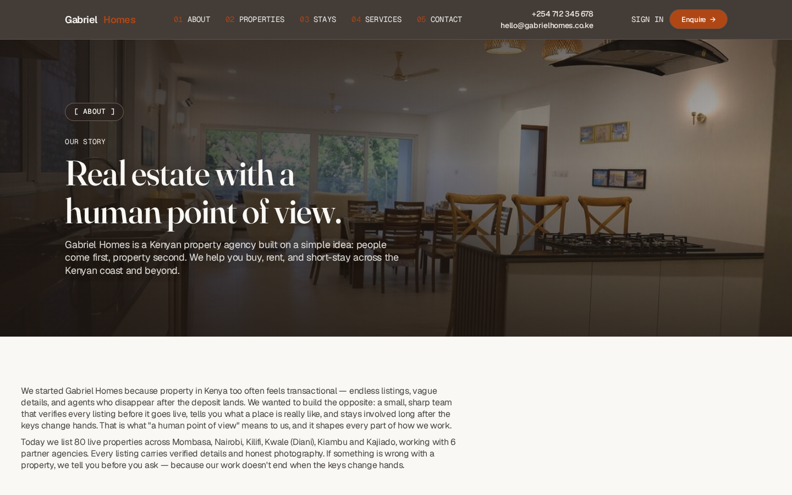

[ Gabriel Homes · delivery ]
Website Update — Real Hero Photo + Agent Contacts
All of your latest notes are done: the fake hero image is gone, and every agency card now shows the agent's portrait with live contact links.



recommended Fixed Updater
The repaired UPDATE-WEBSITE.bat on its own. Download it, then copy it into your site folder (replacing the old one) and double-click it there.
Download the fixed updaterFull Update Zip
The site code update that goes with the fixed updater — it contains the newest pages, the fixed updater and everything else the site needs. Data, photos and videos are never touched.
Download the update zip[ how to apply the update — 3 steps ]
- Download the fixed updater (left button). It lands in your network Downloads — that is fine, leave it there for a moment.
- Move it into your site folder. Open Downloads, right-click
UPDATE-WEBSITE.bat→ Cut, then open your Gabriel Homes site folder (the one withmanage.pyanddb.sqlite3) and Paste it there — choose Replace when asked. - Double-click
UPDATE-WEBSITE.batin the site folder. It finds the newest update zip in your redirected Downloads by itself, applies it, updates the database and prints OK.
STOP-WEBSITE), then double-click
START-GABRIEL-HOMES, then refresh your browser. This is what makes the
About page and property pages work again.
What was actually wrong? (technical detail)
CMD's cd /d \\server\share\... always fails on UNC paths, and CMD
falls back to C:\Windows. The new updater uses
pushd (which maps a temporary drive letter for network paths),
tells an extracted update folder apart from the real site by the
presence of db.sqlite3, resolves the true Downloads location from
the registry (even when redirected to \\KT-DC2\...), and can also
receive the update zip or the site folder by drag & drop.